- nginx.== Задание ==
docker pulldocker imagesdocker run -d [image_id|repository]docker psdocker inspect [container_id|container_name]docker stop [container_id|container_name]docker psdocker restart [container_id|container_name]Проверить любым способом, что контейнер запустился
sudo docker pull nginx- выкачиваем официальный докер образ с nginx(по умолчанию:latest).
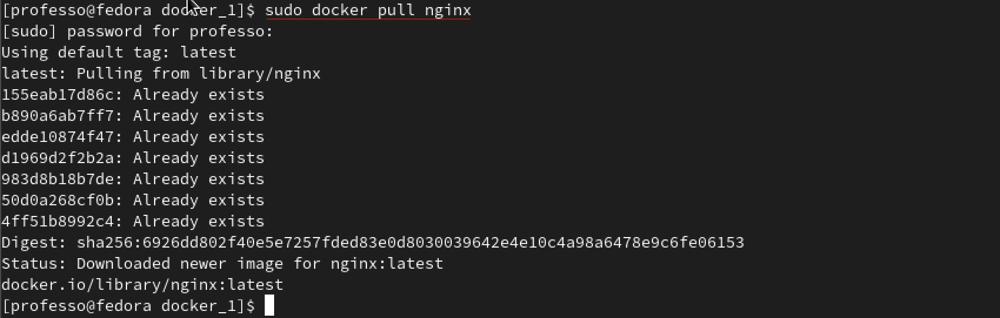
sudo docker image- проверяем наличия докер образа.
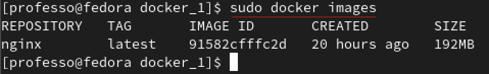
sudo docker run -d --name part_one_container 91582cfffc2d- запускаем образ используяimage id(флагом--nameзадаем свое имя)sudo docker ps- проверяем запуск
sudo docker inspect part_one_container- смотрим информацию о контейнере
 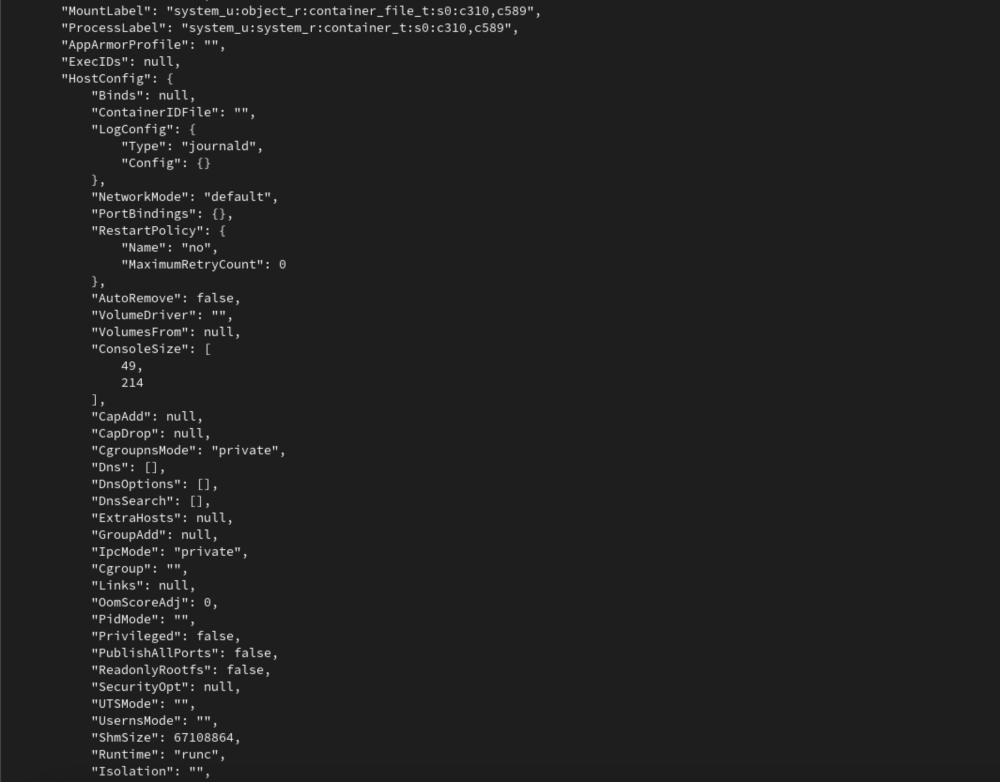
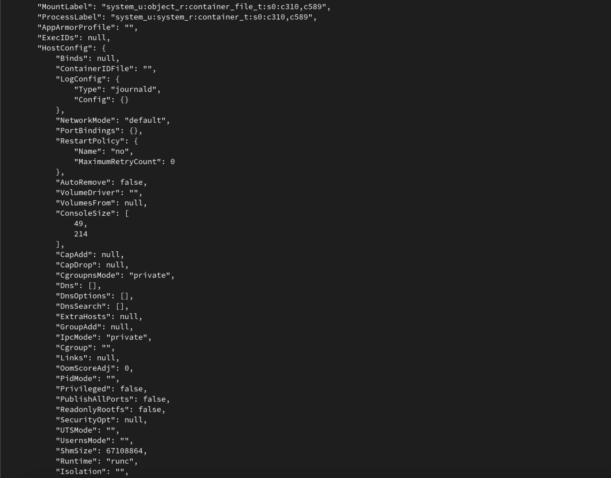
 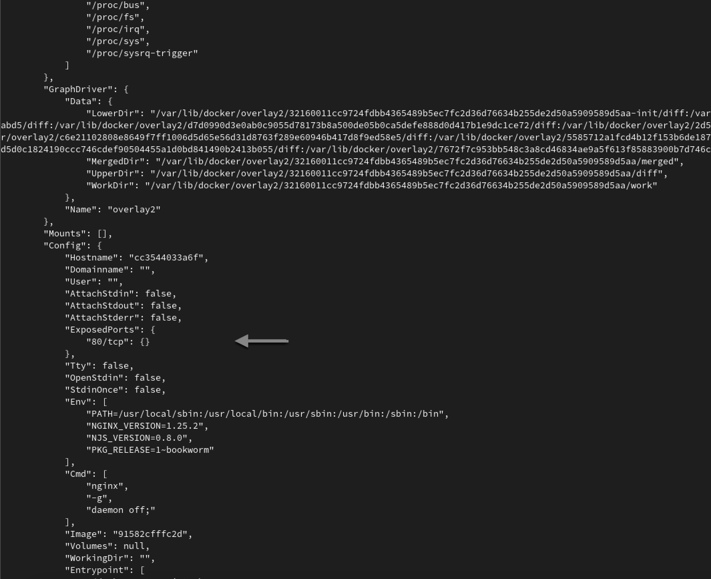
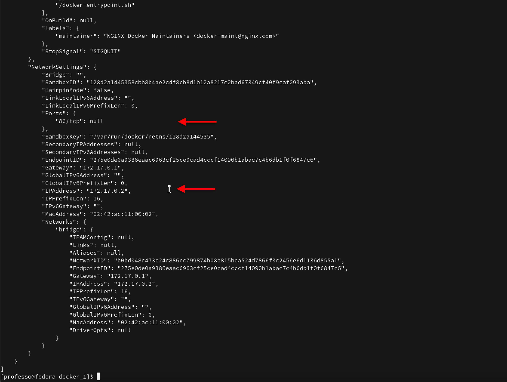
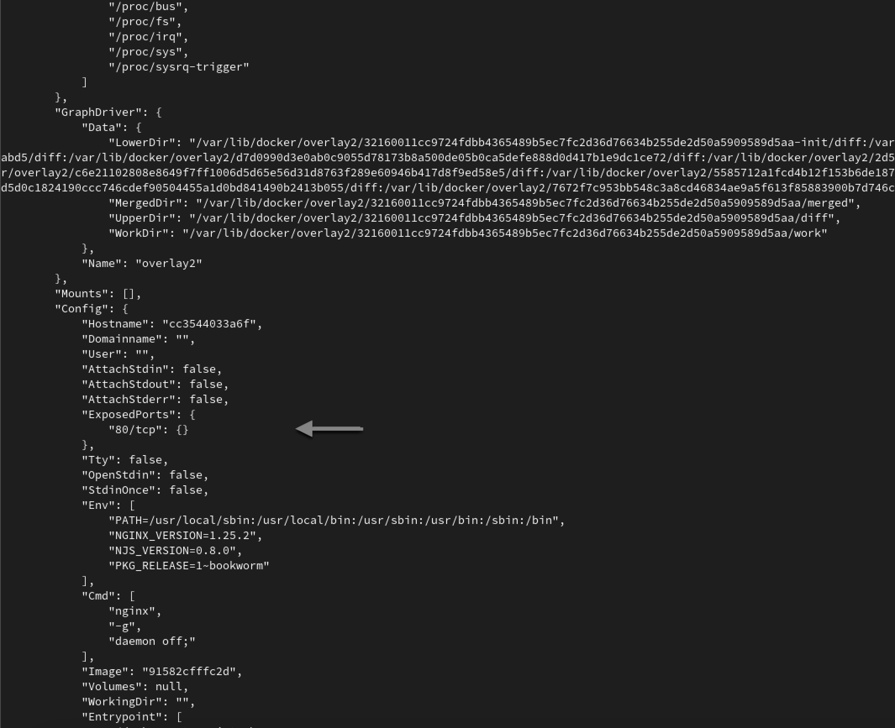
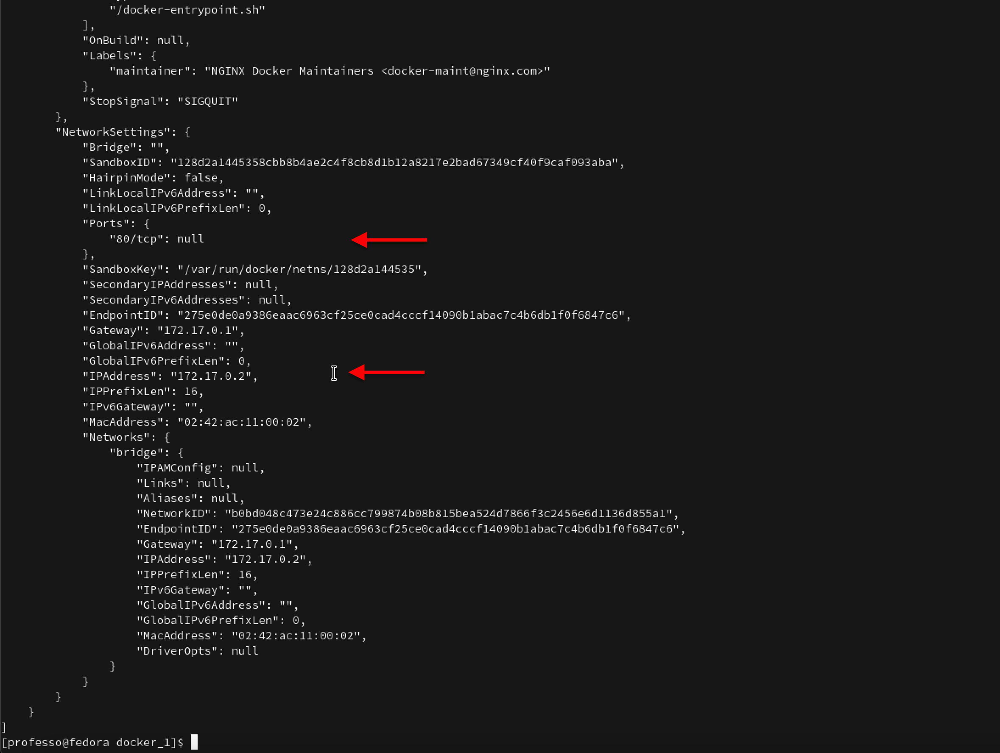
sudo docker inspect--size part_one _container | grep -i size
--sizeдобавляет информацию о размере контейнера в байтах

sudo docker inspect -f '{{.Config.ExposedPorts]}' part_one_container-f = --format=вывод информации об открытых портах контейнераsudo docker inspect part_one_container | grep "\"80/tcp\": {}"- выводим только информацию о портах

sudo docker inspect -f '{{range.NetworkSettings.Networks}}{{.IPAddress}}{{end}}' part_one_container- находим ip контейнераsudo docker inspect part_one_container | grep 172.17.0.2- выводим только ip контейнера
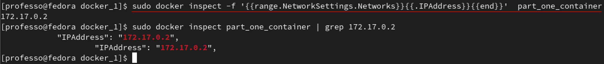
sudo docker stop part_one_container- останавливаем образ используя container_namesudo docker ps- проверяем, что докер образ остановлен.

sudo docker run --name part_one_container2 -d -p 80:80 -p 443:443 nginx- запускаем докер образ с портами 80 и 443 в контейнере, замапленными на такие же порты на локальной машинеsudo docker ps- проверяем, что запуск прошел успешно

xdg-open http://localhost:80- в браузере проверям доступ через 80 порт локальной сети к стартовой страничкеngnix
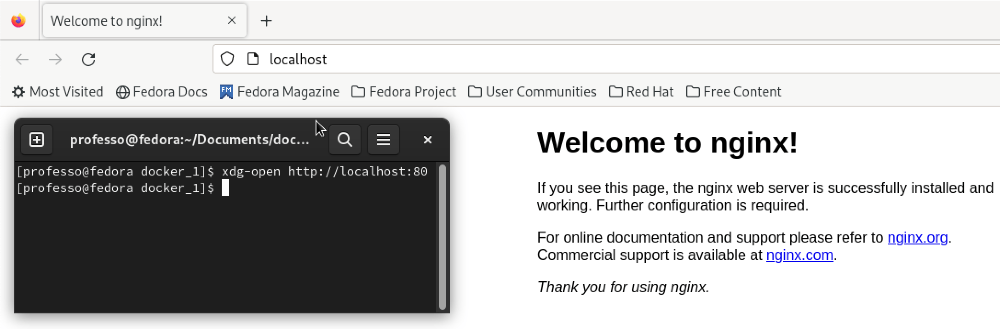
sudo docker restart part_one_container2- перезапускаем докер контейнер используяnamesudo docker ps- смотрим что докер контейнер перезапустился

== Задание ==
docker cpdocker rmi [image_id|repository], не удаляя перед этим контейнерыПроверить, что по адресу localhost:80/status отдается страничка со статусом сервера nginx
sudo docker rename part one_container2 part_two _containerпереименновываем контейнер, для удобства, под part 2sudo docker exec part_two_container cat -n /etc/nginx/nginx.conf | grep .- открываем конфигурационный файл внутри контейнера, (флаг -n и grep . для удобства чтения отчета)

sudo nano nginx.conf- создаем файл nginx.conf и записываем в него информациюcat -n nginx.conf | grep .- показываем содержимое файла nginx.confsudo docker cp nginx.conf part_two_container:/etc/nginx/- копируем nginx.conf в докер образsudo docker exec part_two container nginx -s reloadперезапуск nginx (docker exec запускает новую команду в работающем контейнере)
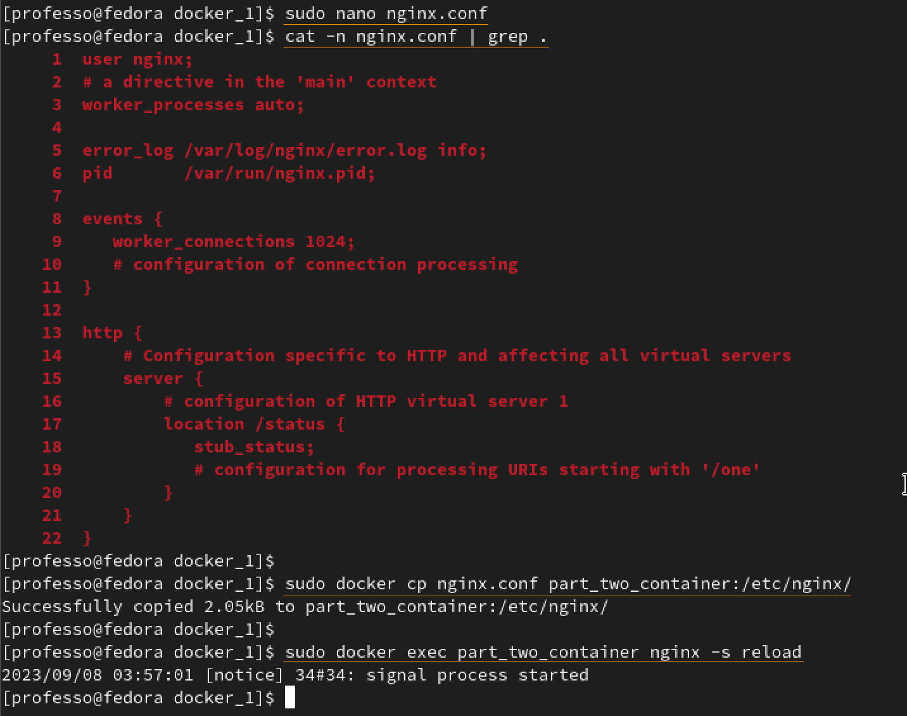
xdg-open http://localhost:80/statusоткрываем localhost:80/status в браузереsudo docker psсверяем количество connections.
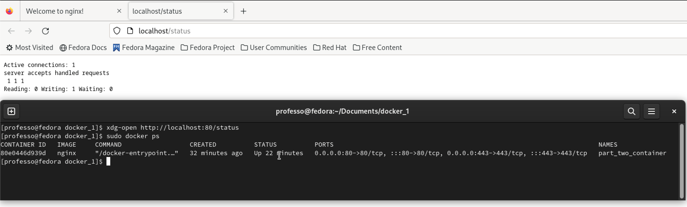
sudo docker export -o container.tar part_two_container- экспортируем контейнер parttwocontainer в файл container.tarlsпроверяем наличие файла container.tar

sudo docker stop part_two_container- останавливаем part_two_container
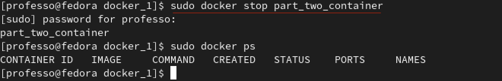
sudo docker rmi -f nginxпринудительно удаляем образ nginx
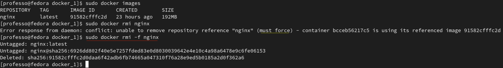
sudo docker rm part_two_containerудаляем part_two_container
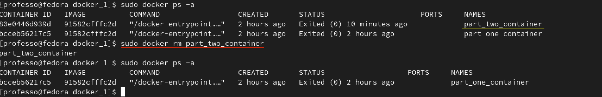
sudo docker import container.tar nginx_restoredимпортируем из файла container.tar
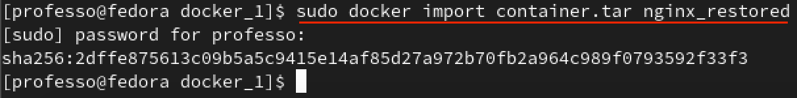
sudo docker run --name part_two_container_fin -d -p 80:80 -p 443:443 -it nginx_restored shПри этом создается и запускается контейнер, названный part_two_container_fin из nginx_restored образа, с sh оболочкой в качестве основного процесса. Опция -d(сокращение от --detach) запускает контейнер в фоновом режиме в автономном режиме с прикрепленным псевдо-TTY ( -t). Для параметра -i установлено значение «Сохранить STDIN подключение» ( -i), что предотвращает sh немедленный выход процесса.sudo docker exec -it part_two_container_fin service nginx startзапустить nginx и связанные с ним процессы(docker exec запускает новую команду в работающем контейнере.)xdg-open http://localhost:8O/statusоткрываем localhost:80/status в браузере

== Задание ==
Hello World!
sudo nano hello_world_server.ccat hello_world_server.c | grep .

sudo nano nginx.confcat nginx.conf | grep .
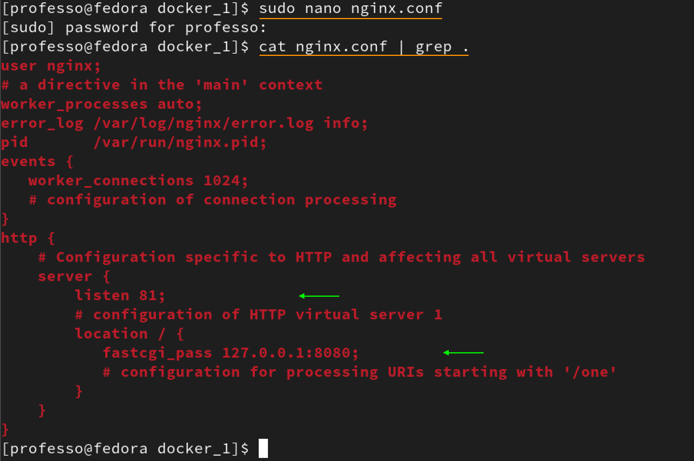
sudo docker run --name part_3_container -d -p 81:81 nginxsudo docker ps
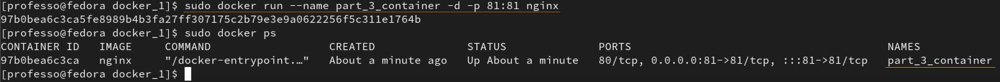
sudo docker cp nginx.conf part_3_container:/etc/nginx/sudo docker cp hello_world_server.c part_3_container:/home/
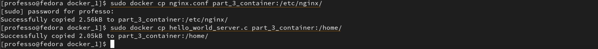
sudo docker exec -t -i part_3_container /bin/bashapt-get update

apt install gcc libfcgi-dev spawn-fcgi

cd /home/lsgcc -o miniserver_hello_world hello_world_server.c -lfcgils
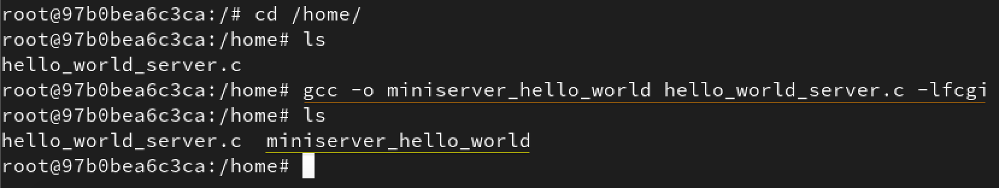
spawn-fcgi -a 127.0.0.1 -p 8080 ./miniserver_hello_world

nginx -s reload||nginxexitxdg-open http://localhost:81
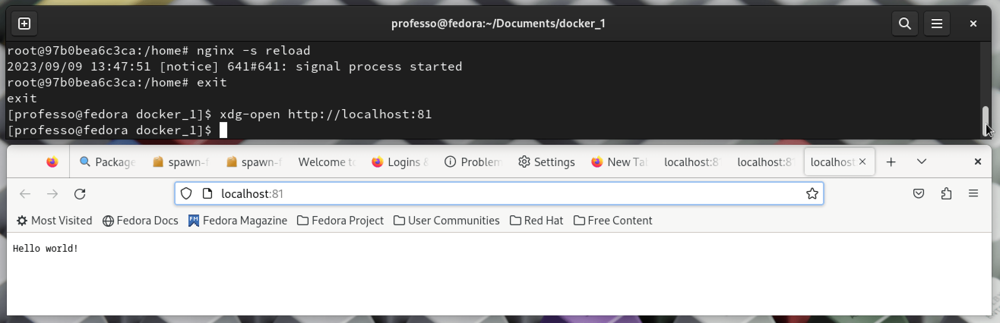
make run_part_3 собирает и запускает мини веб-сервер с помощью скриптовmake run_part_4собирает и запускает мини веб-сервер с помощью Докерфайла и скриптовmake run_part_5собирает, запускает и проверяет мини веб-сервер с помощью Докерфайла, скриптов и docklemake run_part_6 собирает, запускает и проверяет мини веб-сервер с помощью docker-compose, скриптов и Докерфайла